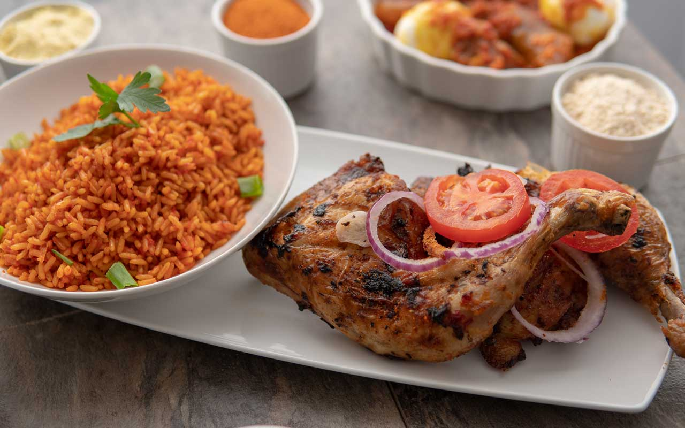
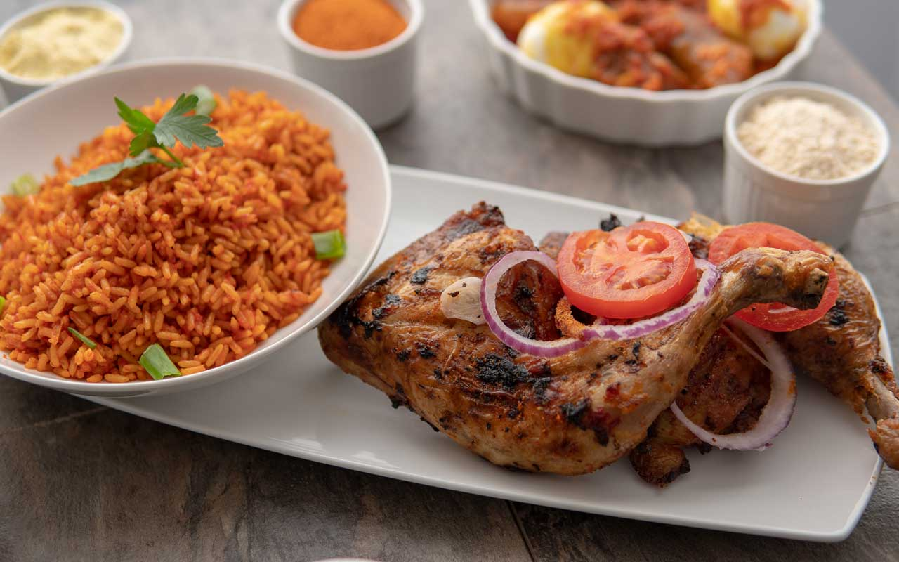
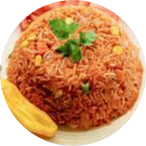
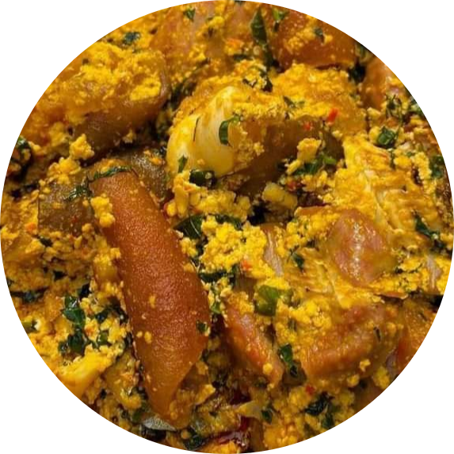

The Nigerian Food Heritage
Nigerian food heritage is a rich and diverse culinary tradition that reflects the country's cultural, geographical, and historical diversity. It encompasses a wide variety of flavors, ingredients, and cooking techniques, making it one of the most vibrant and dynamic food cultures in Africa. Here's a summary of key aspects of Nigerian food heritage:
- Diversity: Nigeria's food heritage is incredibly diverse, with each of the country's numerous ethnic groups contributing their own unique dishes and flavors. The major ethnic groups, including the Yoruba, Igbo, and Hausa, have distinct culinary traditions that have influenced the overall Nigerian cuisine.
-
Staple Foods: Some staple foods in Nigerian cuisine include rice, yam, cassava, plantains, and maize. These ingredients are often used in a wide range of dishes, from starchy side dishes to main courses.
-
Spices adn Seasonings: Nigerian cuisine is known for its bold and flavorful spices and seasonings. Commonly used ingredients include chili peppers, ginger, garlic, onions, and a variety of herbs and spices. These ingredients contribute to the rich and complex flavors of Nigerian dishes.
-
Soups and Stews: Nigerian cuisine is famous for its hearty and flavorful soups and stews. A popular example is Egusi soup, made with ground melon seeds and vegetables, and often served with fufu or pounded yam. Another well-loved dish is Jollof rice, a one-pot rice dish cooked with tomatoes, peppers, and various seasonings.
-
Meat and Fish: Nigerians enjoy a variety of meats and seafood in their dishes. Goat meat, beef, chicken, and fish are commonly used in soups, stews, and grilled dishes. Suya, skewered and grilled meat often served with spicy peanut sauce, is a popular street food.
-
Snacks and Street Food: Nigerian street food culture is vibrant, with a wide array of snacks and quick bites available. Popular options include puff-puff (fried dough balls), chinchinga (kebabs), and akara (bean cakes).
-
Fufu and Swallow: Nigerian cuisine features a variety of starchy side dishes collectively known as "swallow." These include pounded yam, eba (cassava), amala (yam flour), and others. These are typically served with soups and stews and are used as a utensil to scoop up the sauces.
-
Sweets and Desserts: Nigerian desserts include treats like chin-chin (fried dough), buns, and a wide range of sweet pastries. Coconut candy and plantain chips are also popular sweet snacks.
-
Beverages: Nigeria has a variety of traditional drinks, including palm wine, zobo (a hibiscus-based drink), and kunu (a fermented grain beverage). Additionally, tea and coffee are also widely consumed.
-
Cultural Significance: Nigerian food is an integral part of cultural celebrations and gatherings. Many dishes have symbolic significance and are prepared for special occasions, weddings, and festivals, enhancing the sense of community and tradition.
Nigerian food heritage is a testament to the country's rich history and diverse culture, and it continues to evolve and adapt with modern influences while maintaining its deep-rooted traditions and flavors. It's a vibrant and flavorful culinary tradition that has gained recognition and appreciation worldwide.

 

Visiting!!!, Check out these food types:
Nigerian cuisine is a vibrant tapestry of flavors, rich in tradition and culture. From the bustling markets to family dinner tables, these staple foods bring people together and offer a taste of Nigeria's heart and soul:
|
Dish Name |
Culinary Note |
What to Expect |
| 1. |
Jollof Rice |
A celebration in a dish, Jollof rice is a flavorful blend of rice, tomatoes, peppers, and a symphony of spices. Each bite is an explosion of taste, and it's a symbol of joy in Nigerian gatherings. |
 |
| 2. |
Egusi Soup |
With its velvety, nutty goodness, Egusi soup is a warm embrace. Made from melon seeds and leafy greens, it's a comfort food that wraps you in its earthy aroma. |
 |
| 3. |
Amala and Ewedu |
The dark and chewy Amala harmonizes with the green, slimy Ewedu soup. Together, they dance on your taste buds, offering a unique blend of textures and flavors. |
 |
| 4. |
Pounded Yam and Egusi Soup |
A match made in heaven, pounded yam's smooth texture pairs wonderfully with the thick, luscious Egusi soup. It's a meal that nourishes the body and soul. |
 |